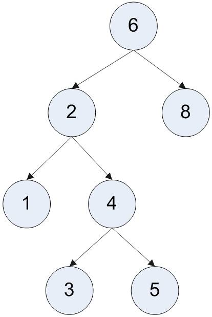

Lab 11: Binary Search Trees
Tree

Child and Parent
- Every node except the root has one parent
- A node can have zero or more children
Leaves
- Leaves are nodes with no children
- Examples: 1, 3, 7, 8
Sibling
- Nodes with the same parent
- Examples: 2 and 8; 1 and 4; 3 and 7
Binary Tree
- At most two children for each node
- A root node at the top (or the tree is empty)
- Nodes with no children are leaf nodes
Left Complete Tree
- All levels are full except last level
- Last level filled from left to right
Tree Traversals
- To visit each node of the tree
- Recursively visiting left and right sub-trees
Pre-order (NLR)
- Current node, Left sub-tree, Right sub-tree
In-order (LNR)
- Left sub-tree, Current node, Right sub-tree
Post-order (LRN)
- Left sub-tree, Right sub-tree, Current node
Binary Search Tree (BST)
- A Binary Tree (its nodes have at most two children)
- Ordering: Left sub-tree < Node < Right sub-tree
- NOT necessarily a complete tree
- Same collection of elements can have different BSTs
- A java applet of BST: http://www.cs.jhu.edu/~goodrich/dsa/trees/btree.html
Insert X
Recursively do:
- Compare(X, node)
- X < node: Go left
- X > node: Go right
If found (X == node), we can either insert a a duplicated value or ignore it.
Otherwise insert X at the last spot.
Delete
Case 1: node n is a leaf (no children)
- Simply delete n
Case 2: node n has only one child
- Make the child of n (n.child) become a child of the parent of n (replace n with n.child as the child)
- Delete n
Case 3: node n has two children
- Replace n with the smallest node (m) in the right sub-tree
- Recursively delete m
- As the smallest node, m either has a right child or no children at all
- So, deleting m can only be case 1 or case 2, i.e., the simple cases
Lab Task
An incomplete binary search tree implementation (TreeNode.h and Tree.h) is given to you. Your task is to complete the parts commented with "TO-DO" in Tree.h ONLY:
- insertNodeHelper()
- preOrderHelper()
- inOrderHelper()
- postOrderHelper()
- determineDepth()
- binarySearchHelper()
You are NOT allowed to make any changes to Treenode.h.
Test your Tree implementation with main.cpp.
Here is the expected output:
=== Enter 10 integer values === Preorder traversal 1 0 2 3 88 4 6 22 21 10 Inorder traversal 0 1 2 3 4 6 10 21 22 88 Postorder traversal 0 10 21 22 6 4 88 3 2 1 There are 9 levels in this binary tree Search for 5: Comparing 5 to 1; larger, walk right Comparing 5 to 2; larger, walk right Comparing 5 to 3; larger, walk right Comparing 5 to 88; smaller, walk left Comparing 5 to 4; larger, walk right Comparing 5 to 6; smaller, walk left Element was not found Search for 22: Comparing 22 to 1; larger, walk right Comparing 22 to 2; larger, walk right Comparing 22 to 3; larger, walk right Comparing 22 to 88; smaller, walk left Comparing 22 to 4; larger, walk right Comparing 22 to 6; larger, walk right Comparing 22 to 22; search complete 22 was found